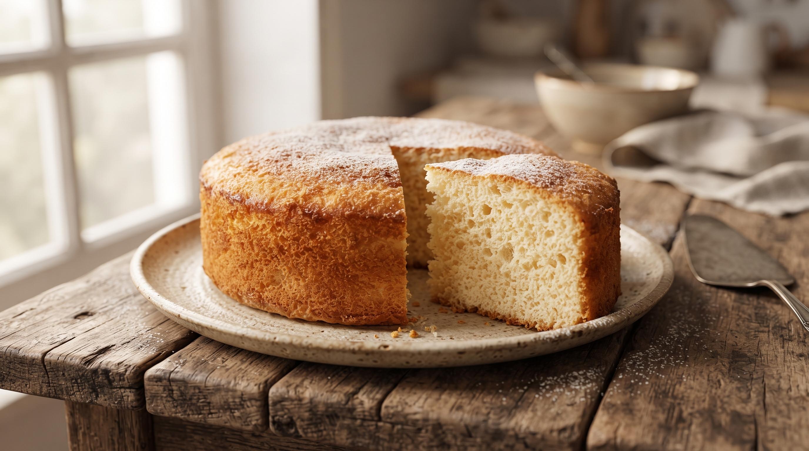

Todas nuestras recetas
Explorá el recetario completo de la familia! Desde los clásicos infaltables, hasta aquellas preparaciones para ocasiones especiales

Clásico Bizcochuelo de Vainilla
El clásico de todas las tardes, esponjoso, y con un truco especial de mi mamá
Ver esta receta